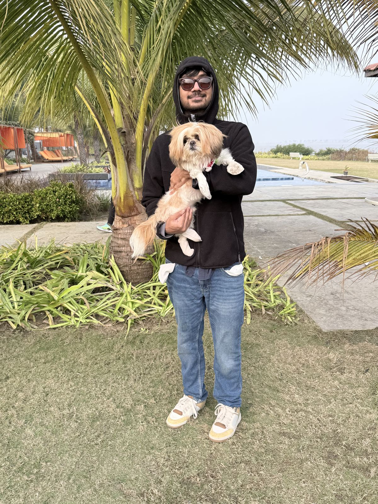
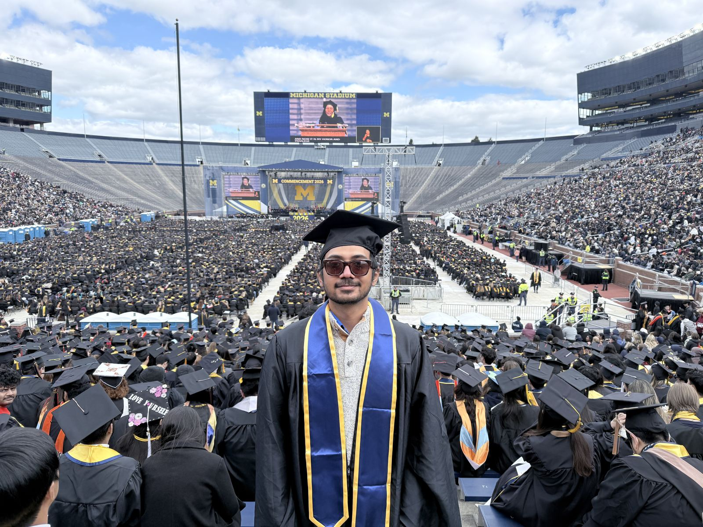

Product Manager · AI & Data Products
Hi, I'm Debmalya — I build products that turn complex data into things people can actually use.
Data scientist turned product person. I start from the user, reason from first principles, and I care as much about how the story reads as whether the model works.
Open to full-time Product Manager roles
QuiTam Copilot
2026–PresentTurboTax for whistleblower lawsuits. A multi-agent AI turns evidence into a case memo in hours. Validated by practicing attorneys.
tatter.
2025We mend to make more memories. An app + kit system fixes broken gear at home. Won the IPD Challenge.
Experience
Where I've worked
Product strategy for a diagnostics workflow platform
With Rahul Nelli at Purdue, building a faster diagnostic system for university and USDA labs. Discovery across a startup and two labs surfaced the real blocker — no shared standard, every lab on its own private LIMS fork — so I'm designing the connective LIMS layer every other component depends on. Software now piloting.
AI interview coach for customer discovery
I design and build Erika, a voice AI coach launching across three business-school courses in fall 2026 that teaches students to ask more empathetic discovery questions — drawing people out about real experiences instead of leading or pitching. I made the build-vs-buy call across voice AI platforms and built a RAG-backed feedback loop around the Mom Test, then re-architected it when the first version fired seven backend calls per question and left dead air in the conversation.
Enterprise analytics, AI tooling & delivery for 20,000+ users
- Shipped AI code-copilot and doc-summarization tooling to 20,000+ users — scoping what to build, prioritizing the backlog, and cutting doc-review time ~60%.
- Cut average resolution time 40% on a self-serve analytics platform by redesigning the workflow around how users actually triaged issues.
- Re-engineered a legacy SQL pipeline from 80 hours to 8, unblocking the team's delivery cadence.
- Ran delivery as Scrum Master, raising sprint completion from 65% to 90%.
Research
Published & in review
Detection of Tor traffic using deep learning.AICCSA 2020 · 80+ citations
Ring vaccination strategy in complex and spatial networks: a mixed-percolation approach.Physical Review E
Ultra-high-throughput screening of antimicrobial combination therapies with a two-stage transparent ML model.Submitted · Nature Communications
Life
A few things outside of work

